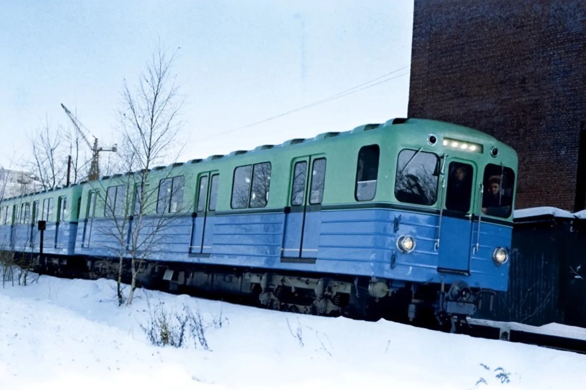
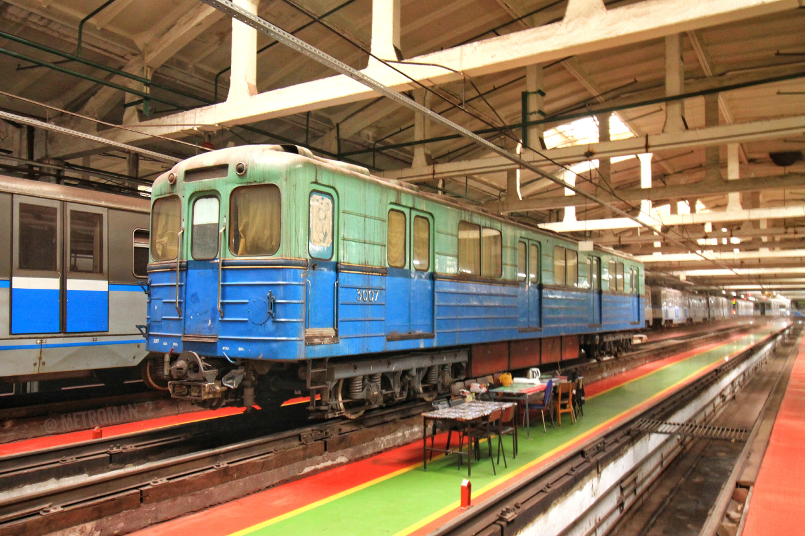
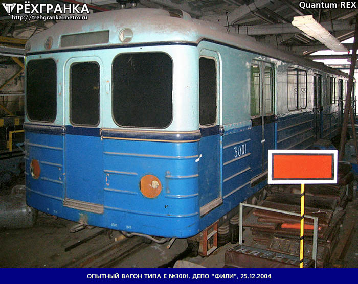

Опытный поезд типа "Е" №3001-3007
Опытный поезд был построен в декабре 1959 года. Поезд имел 7-вагонную составность, став предшественником легендарной серии вагонов типа Е, которые на долгие годы определили облик Московского метрополитена.
История опытного поезда
Составность поезда: 3001-3002-3003-3004-3005-3006-3007
Постройка
Опытный поезд из 7 вагонов построен для испытаний новых технических решений.
Расформирование
После прохождения испытаний поезд был расформирован. Вагоны начали эксплуатироваться в разных депо.
Первые вагоны (3001-3002)
Первые два вагона до 1970 года эксплуатировались в ТЧ-2 ("Сокол"). В 1970 переданы в ТЧ-9 ("Фили") в качестве служебных. Утилизированы в 2006 году.
Путешествие вагона 3007
Вагон 3007 был передан в Венгрию, затем в Прагу для испытаний и изучения.
Возвращение
В 1975 году вагон 3007 вернулся в Москву. Участвовал в испытаниях опытного поезда "И".
Вагон-сарай
В 1997 году вагон стал использоваться как вагон-сарай (хозяйственный) в ТЧ-15 ("Печатники").
Передача в ТЧ-8
В 2003 году вагон был передан в ТЧ-8 ("Варшавское"), где находится до сих пор.
Судьба остальных вагонов: Оставшиеся вагоны (3003-3006) работали в ТЧ-2. К сожалению, все они были утилизированы.
Сохранившийся вагон №3007
📍 Текущее местонахождение
ТЧ-8 "Варшавское"
Вагон №3007 находится в депо с 2003 года. Используется как хозяйственный.
📅 Историческая ценность
Это единственный сохранившийся вагон из первого опытного поезда серии Е. Он также участвовал в испытаниях поезда "И".
Из состава уцелел лишь 3007. Надеюсь, его сохранят для истории, как сохранили вагоны 3605, 4412, 5170, 3941.
Фотогалерея

📸???

📸 Metroman_2

📸 Трехгранка
Нажмите на фото для увеличения
"Вагоны типа Е стали настоящей легендой Московского метро. Они эксплуатировались более полувека и перевезли миллиарды пассажиров. Первый опытный состав — это начало великой истории."